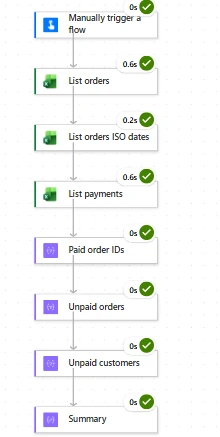

- Power Automate
- Level 7 · Files, email and documents · 3 of 7
Excel Online basics
The Excel Online (Business) connector reads and writes data in Excel files stored in SharePoint or OneDrive. It works with tables, not loose cells: the data must be formatted as a table (Insert > Table) before a flow can see it.
Reading a table
The demo workbook has a table named Orders with five rows: OrderId, Customer, Amount and OrderDate.


Two surprises to plan for
| What you see | Why | Fix |
|---|---|---|
| OrderDate is 46328 | Excel stores dates as a day count. The connector returns that number by default. | Set DateTime Format (advanced parameter) to ISO 8601, or convert with addDays('1899-12-30', ...) (see Dates and time zones). |
| Amount is text | The connector returns every cell as a string. | Wrap in float() or int() before any maths or comparison. |
Limits from the connector documentation
- The largest file the Excel Online (Business) connector supports is 25 MB.
- List rows present in a table returns up to 256 rows unless you turn on pagination in the action's settings.
- Its filter supports only basic functions (eq, ne, contains, startswith, endswith), one filter function per column, and one sort column.
- A file can stay locked for a few minutes after the connector last used it, so avoid people editing the same file while a flow writes to it.
New to this? Start from the basics optional
Table: a named range in Excel with headers. The connector reads by table name, not by sheet.
Key column: the column used to find a row for Update a row or Delete a row. Use a unique ID column.
Build it step by step optional
- In Excel, select your data and choose Insert > Table. Give the table a name on the Table Design tab.
- Add List rows present in a table: choose the location, library, file and table.
- Open Advanced parameters and set DateTime Format to ISO 8601.
- For more than 256 rows, open the action's Settings, turn on Pagination and set a threshold.
- To write, use Add a row into a table, or Update a row with a key column and value.
Common mistakes
- Data that isn't formatted as a table. The table drop-down is empty.
- Comparing amounts as text: "80" is greater than "1200" when compared as text.
- One row at a time in a loop for thousands of rows. It is slow and uses many requests; consider a SharePoint list or Dataverse for large data.